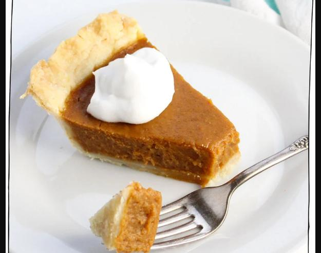

Vegan Pumpkin Pie

Description
A creamy and tasty Pumpkin pie made with pumpkin purée
Easy to make and easy to Bake.
Prep Time: 5 minutes
Total Time: 1 hr 5 minutes
Serving: 1 9" Pie
Ingredients
- 1 1/3 cups Pumpkin purée
- 3/4 cup Coconut Milk
- 1/2 cup Brown Sugar
- 1/4 cup Cornstarch
- 1/4 cup Maple Syrup
- 1 tspn Vanilla Extract
- 2 tspn Pumpkin Pie Spice
- 1/2 tspn Cinnamon
- 1/2 tspn Salt
- 1 9" Frozen Vegan Pie Crust
Directions
- Preheat oven to 350°F. Have unbaked 9" Pie crust ready.
- Add Pumpkin, coconut milk, brown sugar,cornstarch,maple syrup
vanilla extract, pumpkin pie spice, cinnamon, and salt ro a large
bowl. Mix well
- Pour the mixture into the pie crust and use a spatula to evenly
spread mixture and smooth out the top.
- Bake for 60 minutes.Let cool and then chill in the fridge for 4 hours or
overnight until it is completely set. Cut then serve!
Back